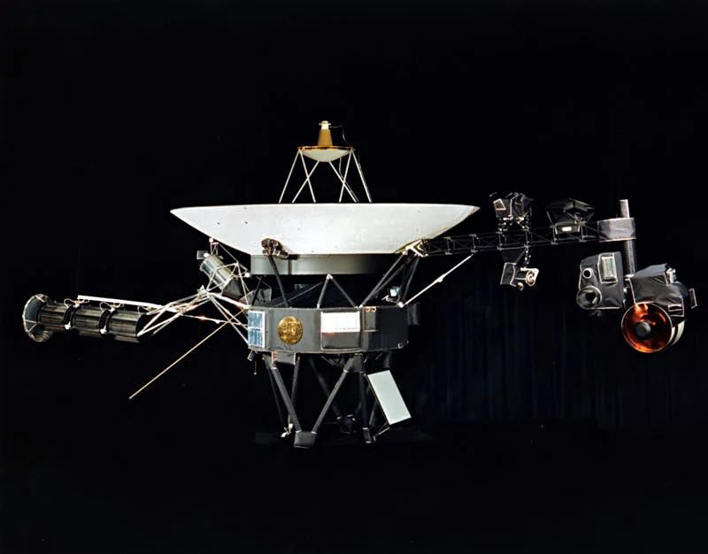

Mission overview
The twin spacecraft Voyager 1 and Voyager 2 were launched by NASA in separate months in the summer of 1977 from Cape Canaveral, Florida.
From NASA's Voyager mission overview.
Both spacecraft visited Jupiter and Saturn. Voyager 2 continued to Uranus and Neptune, while Voyager 1 took a different path after its Saturn encounter. Voyager 1 also took the Pale Blue Dot photograph of Earth in 1990.


Mission milestones
Voyager 2 launched first, but Voyager 1 reached Jupiter and Saturn earlier. Dates below are grouped by month so the two routes are easy to compare.
| Milestone | Voyager 1 | Voyager 2 |
|---|---|---|
| Launch | ||
| Jupiter flyby | ||
| Saturn flyby | ||
| Uranus flyby | Not visited | |
| Neptune flyby | Not visited | |
| Entered interstellar space |
Data from NASA's Voyager 1 history and Voyager 2 history.
What is interstellar space?
Interstellar space is the space between stars. Both Voyagers crossed the heliopause, the boundary where the Sun's outward-flowing solar wind meets the interstellar medium.
Voyager survey
This is a practice form. Both questions are required. Your answers are not sent or saved.
Sources and credits
The opening excerpt is from NASA. The summary and table use these NASA mission pages.
- Voyager mission overview
- Voyager 1 mission history
- Voyager 2 mission history
- Voyager spacecraft design
- Voyager interstellar mission
The spacecraft image is credited in its caption. Fonts and icons are from Google Fonts and Google Material Icons.